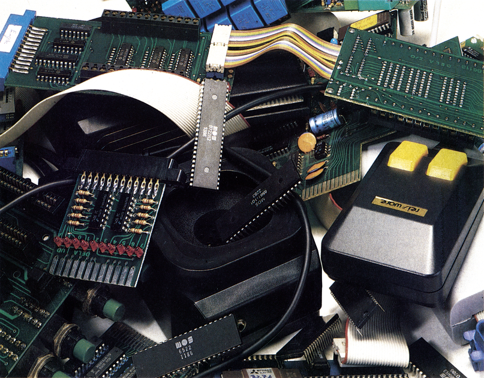
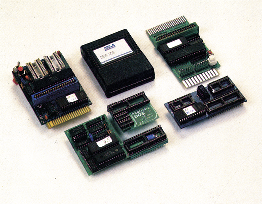
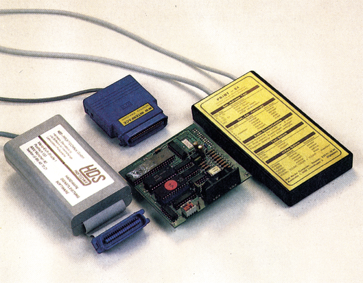
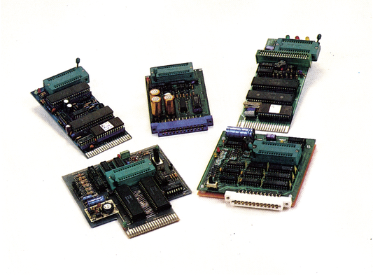
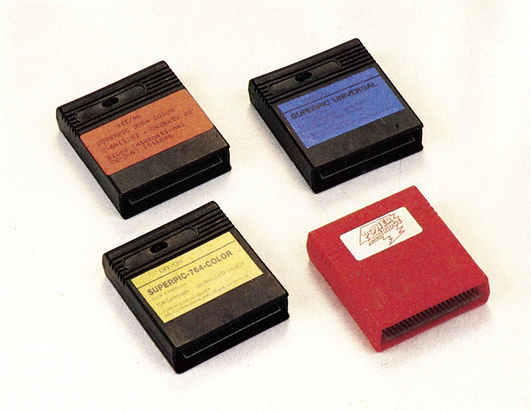
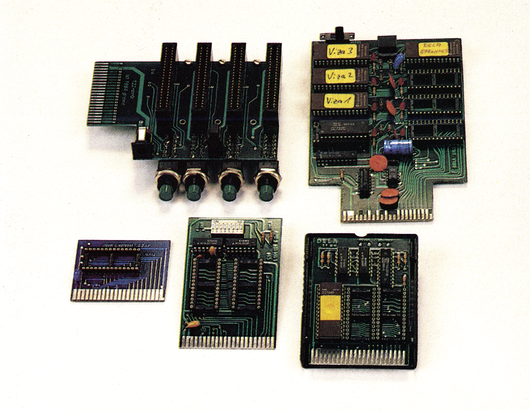
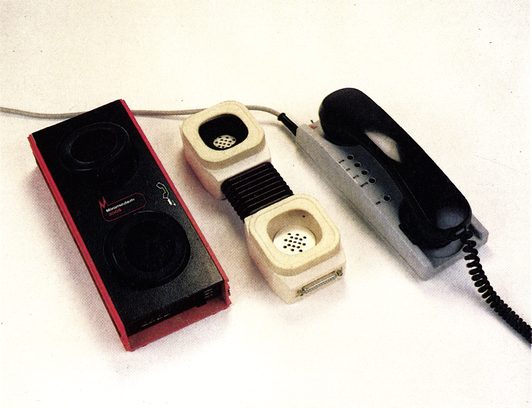

Was sind eigentlich Hardware-Erweiterungen?
Wir helfen Ihnen zu Il verstehen, was Ausdrücke wie EPROM-Brenner, Hardcopy-Modul oder Interface, die überall zu finden sind, bedeuten.

Man hört und liest überall über die verschiedensten Hardware-Erweiterungen. Sei es nun, daß man auf eine Anzeige stößt, in der von dem neuesten und schnellsten Floppy-Speeder die Rede ist, oder von einem sagenhaften Centronics-Interface das alles kann. Oft hört man aber auch von erfahrenen Computer-Anwendern Ausdrücke wie zum Beispiel Akustikkopplerr, EPROMer oder Digitizer. Für einen Neueinsteiger in der Computertechnik sind sicher viele dieser Ausdrücke »böhmische Dörfer«.
Dieser Artikel hilft Ihnen, die vielen auf dem Markt erhältlichen Hardware-Erweiterungen besser zu verstehen. Sie werden sich nun etwas darunter vorstellen können, wenn Sie wieder mal einen Ausdruck hören, der Ihnen bis jetzt vielleicht noch fremd vorkommt. Außerdem erfahren Sie noch eine Menge über die Funktionsweise und den Sinn vieler Erweiterungen. Danach können Sie entscheiden, ob möglicherweise die eine oder andere Hardware-Erweiterung für Sie von Nutzen sein könnte oder ob sich ein Kauf lohnt.
Floppy-Speeder
Befassen wir uns gleich zu Beginn mit einer Sparte von Hardware-Erweiterungen, über die sicher die meisten schon einmal etwas gehört haben und die sich viele gerne kaufen möchten: den Floppy-Speedern.
Welchen Sinn haben diese Floppy-Speeder (Beschleuniger)? Es ist wohl jedem bekannt, daß die Commodore-Floppy 1541 nicht zu den schnellsten gehört.
Inzwischen sind aber (serielle) Speeder erhältlich, die die Übertragungsgeschwindigkeit bis auf ein l4faches des Originalwertes erhöhen (zum Beispiel das 64'er-DOS (8fach) oder das Dela-DOS (9fach)). Diese seriellen Beschleuniger (seriell deshalb, da sie alle Übertragungen bitweise abwickeln) sind zwar mit ihren durchschnittlich 8fach gesteigerten Übertragungsgeschwindigkeiten bereits eine große Erleichterung, doch geht es auch noch schneller. So werden auf dem Markt auch noch parallele Speeder angeboten (zum Beispiel Prologic-DOS, Dolphin-DOS, SpeedDos, TurboTrans/TurboAccess und Professional DOS). Mit diesen Beschleunigern sind Geschwindigkeitssteigerungen bis zum 50fachen und mehr möglich. Diesen Faktor kann man sich besser vor Augen führen, wenn man weiß, daß ein Programm, das normalerweise 2 Minuten zum Laden benötigt, mit diesen Speedern in nur 5 bis 10 Sekunden iin den Speicher übertragen wird. Allerdings haben diese hardwaremäßig sehr aufwendigen Speeder auch einen angemessen hohen Preis: man muß dafür schon 200 bis 300 Mark auf den Tisch legen, wogegen die seriellen Beschleuniger mit Preisen zwischen 50 und 100 Mark noch günstig erscheinen.
Wie serielle und parallele Speeder aussehen, zeigt Bild 1. Dort finden Sie eine kleine, nicht vollständige Auswahl dieser Erweiterungen: Prologic-DOS, TurboAccess und Dela-DOS.

Drucker-Interface
Auf dem Markt werden eine Unzahl verschiedenster Drucker angeboten. Dabei haben Drucker mit Centronics-Anschluß (zum Beispiel Produkte der Firmen Epson, Star, Fujitsu oder Brother) den größten Anteil. Diese Drucker lassen sich aber nicht so ohne weiteres an den C 64/C 128 anschließen, wie etwa die MPS-Drucker von Commodore.
Was man zum Anschluß an den C 64/C 128 benötigt, ist ein Drucker-Interface. Ein solches Interface wandelt die bitweise Datenübertragung des seriellen Ports in eine parallele (byteweise) um. Wie Sie vielleicht schon wissen, braucht der C 64 zur Datenübertragung an einen MPS-Drucker nur eine Datenleitung, die Centronics-Norm arbeitet jedoch mit acht Datenleitungen und überträgt immer ein ganzes Byte.
Eine weitere Aufgabe besteht darin, die Commodore-spezifischen Sonderzeichen (reverse Zeichen oder Grafiksymbole), die ein Drucker mit Centronics-Standard normalerweise nicht beherrscht, so aufzuarbeiten, daß der Drucker diese (im Grafikmodus) auch zu Papier bringt.
Außerdem sorgt das Interface dafür, daß der Drucker über eine Geräteadresse angesprochen werden kann. Normalerweise besitzt ein Drucker keine Funktion dieser Art.
Ein Interface ermöglicht es auch, daß mitdem C 64/C 128 überhaupt erst die ganzen Schriftarten eines Druckers mit Centronics-Anschluß genutzt werden können.
Es ist also im Regelfall notwendig, daß man sich, falls ein Drucker mit Centronics-Schnittstelle gekauft wird, ein Interface dazukauft. (Es sei denn, der Centronics-Drucker ist bereits vom Werk aus mit einem Interface ausgestattet.)
Die Preise der verschiedenen Drucker-Interfaces liegen bei etwa 200 bis 300 Mark. In Bild 2 können Sie eine kleine Auswahl von verschiedenen Druckerinterfaces sehen (HDS-, Görlitz, Wiesemann- und Print 64-Interface).

EPROM-Brenner
EPROMs finden zum Beispiel Verwendung bei Modulen, die in den Expansion-Port gesteckt werden (Spielmodule, Erweiterungsmodule). EPROMs sind programmierbare Speicher-Chips. Einmal programmiert behält ein EPROM jahrzehntelang die Daten. Programme in einem EPROM haben den Vortell, daß sie wesentlich schneller in den Speicher des Computers übertragen werden können als von Diskette. Programmiert werden EPROMs mit einem EPROM-Brenner.
Mit diesem Gerät kann jede einzelne Speicherzelle eines EPROMs angesprochen werden und mit einem bestimmten Wert »gebrannt« werden. Inzwischen sind EPROM-Brenner schon so komfortabel, daß man nichts mehr von Technik oder Elektronik verstehen muß, umein EPROM zu programmieren. In der Regel muß lediglich der EPROM-Typ und der Speicherbereich, in dem das Programm im Speicher steht, angegeben werden. Alles andere erledigt das Programm Brenner.
Die EPROM-Programmiergeräte kosten derzeit zwischen 150 und 300 Mark.
In Bild 3 sehen Sie eine Auswahl an gebräuchlichen EPROM-Brennern. (Quickbyte, 64'er-EPROMer, Dela I, AGE- und Merlin-Prommer).

Hardcopy-Module
Nicht jeder Besitzer eines grafikfähigen Druckers verfügt auch über Programme, mit denen man HiRes- oder Multicolor-Bilder ausdrucken kann. Außerdem schaffen es viele Hardcopy-Programme gar nicht, die unter den ROMs liegenden Bilder ($A000 und $E000) auf dem Drucker auszugeben. Ein weiterer Grund, der das Drucken von Bildern erschwert: viele interessante Grafiken sind in geschützten Spielprogrammen enthalten. Und an diese Bilder kommt man gar nicht so leicht heran. Deshalb bieten einige Hersteller Hardcopy-Module an, die einfach auf Knopfdruck das gerade auf dem Bildschirm sichtbare Bild auf einem Drucker ausgeben. Diese für 40 bis 120 Mark erhältlichen Module werden einfach in den Expansion-Port gesteckt. Bei Druck auf bestimmte Tasten oder Knöpfe aktiviertman die Module, die dann einen Ausdruck zu Papier bringen. Bild 4 zeigt Ihnen einige Hardcopy-Module (Superpic-765, Superpic 2064, Superpic Universal und das Power-Cartridge).

Steckplatz-Erweiterungen und Module
Da manchmal die eine Kontaktreihe des Expansion- oder User-Ports nicht ausreicht und man doch gerne mehrere Erweiterungen auf einmal eingesteckt haben möchte, benötigt man eine Karte, die mehrere Steckplätze zur Verfügung stellt, also einen Steckplatz-Verteiler. In diese Karte können dann mehrere Module oder Funktionseinheiten auf einmal eingesteckt werden, die man dann nach Bedarf einschaltet. In der Regel sind diese SteckplatzVerteiler aber nur für die wenigsten Anwender notwendig.
Eine andere Art der Hardware-Erweiterungen sind die Modul- und EPROM-Karten. Diese Karten sind zur Aufnahme für (programmierte) EPROMs vorgesehen. Die Kapazität reicht von 8 KByte bis hin zu 1 MByte EPROM-Speicher. Bei den größeren Karten erhält man beim Einschalten ein Menü, aus dem dann das benötigte Programm ausgewählt und aktiviert wird. Somit hat man also die Programme, mit denen bevorzugt gearbeitet wird, gleich nach dem Einschalten im Speicher und kann sofort mit ihnen arbeiten. Die Karten, auf denen je nach Kapazität mehrere Steckplätze für EPROMs vorhanden sind, werden einfach in den Expansion-Port eingesteckt und schon sind sie betriebsbereit. Preislich bewegen sich die EPROM-Karten zwischen einigen zehn und mehreren hundert Mark. In Bild 5 können Sie einige Variationen dieser Karten sehen, wie sie von verschiedenen Herstellern angeboten werden.

Akustikkoppler
Inzwischen sind Datenbanken oder Mailboxen, die man über das Telefonnetz der Post erreichen kann, ein fester Bestandteil der heutigen Zeit geworden. Um mit diesen Datenbanken in Verbindung treten zu können, benötigt man Akustikkoppler. Man wählt einfach die Telefonnummer der Datenbank, mit der »gesprochen« werden soll und legt den Telefonhörer in den Koppler. Wenn die Box oder die Datenbank antwortet, kann ein Dialog über die Tastatur mit der anderen Einheit geführt werden. Älles, was außer einem Koppler dazu benötigt wird, ist ein Terminalprogramm, das die Übertragung ermöglicht. Ein Nachteil des Datenaustauschs via Telefon soll aber nicht verschwiegen werden: Da die normalen Telefongebühren anfallen, können aus ein paar vergnüglichen Stunden, die man in einer Datenbank »verbringt«, schnell sehr hohe Telefonkosten entstehen. Bedenkt man aber, daß sich Nachrichten, ja sogar ganze Briefe in Windeseile über sehr große Entfernungen übertragen lassen, kann ein Akustikkoppler auf jeden Fall eine sehr große Arkeits- und Zeitersparnis sein. Im Preis sind die Koppler sehr verschieden: Je nach Leistung und Komfort kosten sie zwischen 150 und 800 Mark. Es sollte aber auf jeden Fall darauf geachtet werden, daß die Geräte von der Post zugelassen sind. Verschiedene Bauformen von Akustikkopplern zeigt Ihnen Bild 6.

Digitizer und Scanner
Diese beiden Begriffe kennzeichnen Geräte, die langsam, aber stetig immer interessanter für Grafik Freunde werden. Beide Geräte dienen dazu, von Vorlagen Bilder in den Speicher zu übertragen. Diese Bilder können dann nachbearbeitetund ausgedruckt werden.
Digitizer sind Geräte, an die sich eine Videokamera oder ein Videorecorder anschließen läßt. Die von der Video-Quelle aufgenommenen Bilder werden automatisch in ein Format umgerechnet (digitalisiert), das der Computer auch verarbeiten kann. Die digitalisierten Bildinformationen überträgt der Digitizer anschließend in den Speicher des Computers, wo das digitalisierte Bild dann alsnormales HiRes-(oder Multicolor-)Bild vorliegt. Diese Grafiken lassen sich dann mitjedem handelsüblichen Zeichenprogramm bearbeiten.
Ein Scanner leistet im Prinzip die selbe Arbeit, doch aufeinem anderen Weg. Bei dieser Art der Bilddigitalisierung bewegt sich ein Scanner (Äbtaster) über eine bedruckte Vorlage (Bild, Zeitungsausschnitt). Das Bild wird dann zeilenweise abgefahren. Die Bildinformation legt der Scanner dann als Hell/Dunkel-Werte im Computer ab. Dort lassen sich die digitalisierten Bilder wieder mit jedem Grafikprogramm weiterbearbeiten.
Wir hoffen, Ihnen damit ein paar computerspezifische Ausdrücke näher erklärt zu haben. Sollten Sie Interesse an weiteren Erläuterungenhaben, schreiben Sie uns, über welche Begriffe Sie Informationen erhalten möchten.
(dm)